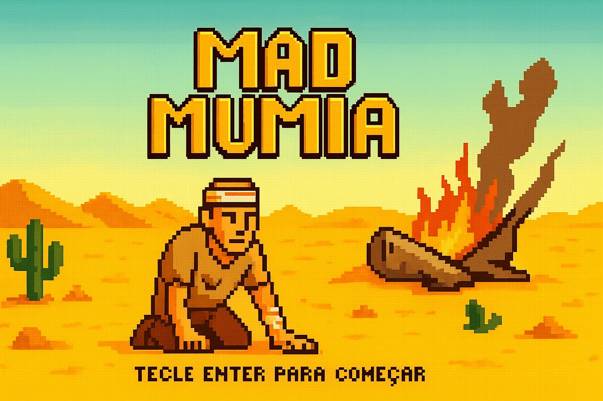

MAD MUMIA
Sobre o jogo
MAD MUMIA é um jogo sobrevivência no deserto, criado por um grupo de calouros de ciência da computação no período de 2025.1. Nele, o jogador principal precisa encontrar pilhas no deserto para conseguir ligar o rádio de pedir ajuda. Porém, ao mesmo tempo, ele é perseguido por criaturas místicas, que despertaram de seus túmulos: as Múmias. Felizmente, nosso protagonista é um soldado treinado para se defender, e sempre anda com sua arma de confiança. Todos os responsáveis pelo projeto estão no github.
Como jogar
Use [W], [A], [S], [D] para mover o personagem. Controle a direção da mira e atire com o botão esquerdo do mouse. Corações para regenerar a vida, munições para recarregar a arma e as pilhas do rádio estarão espalhadas pelo mapa.
FECHAR
Como baixar o jogo
1. Clique no botão "Baixar jogo" abaixo
2. Após clicar, seu navegador irá baixar o arquivo .zip do jogo. Salve-o em alguma pasta do seu computador.
3. Depois de baixar, encontre o arquivo .zip, clique com o botão direito e escolha "Extrair tudo..." para descompactar.
4. Uma nova pasta será criada. Abra a pasta e depois a subpasta com o mesmo nome do seu arquivo.
5. Procure por "main.exe" (ou um arquivo de tipo "aplicativo") e dê um duplo clique para iniciar.
6. Aproveite o jogo! 😊